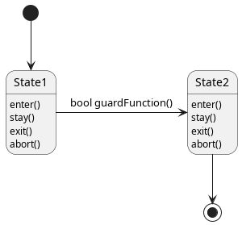

Statemachine Framework
The FSM framework provided under utilities provides a full-fledged W3C state machine implementation.
State Model
States and Transitions
A state is comprised of several actions; they are called as the state is entered, maintained active or exited respecitively. A state has a single execution token, i.e. can be either active or inactive.
Any number of states can be active at the same time.
States are connected by transitions that test to either true or false - the first true transition is activated. In the given model, transitions are owned by their source states, so only transititions of active states are tested. If a transition is taken, it first exits() the parent state, then enters() the target state.

Initial and Final
Initial states are active when the automaton is started. They never enter(), only stay and exit.
Final states cannot be stay() in or exit(), only entered. Also, final states are not allowed to have transitions attached to them.
Nesting States
The State implementation allows state nesting. Any state can have any number of substates and is considered an automaton in its own right.
Exiting a parent state: Abort Action
The classic automaton is extended using an abort action as per [Iatrou2019]. Abort is called whenever a parent state exits(), forcing all substates to seice execution. Abort actions are propagates to sub-substates. Upon exit(), abort() is only called on substates that are active in order to allow the to ‘clean up’ before they become inactive.
Aborting has no effect on final states - it is considered “safe” an inconsequential to abort an automaton that has no active states.
If abort() is called on a historizing state, it will reset the history and the historizing subautomaton will re-initialize on initial states next time it is activated.
Exiting a parent state: Historizing
A historizing state remembers which sub-states where active when it was exited. Instead of calling abort() on them, they are simply no longer executed. They maintained their active attribute, even though they will no longer execute.
A programmer should be warry that his states within a historizing parent state may be suspended at any point time without feedback to the substates. Execution may resume after that.
The implementation only uses shallow historizing: the single layer of the automaton remembers which states which were active on exit(); substates with their own sub-substates may abort or historize as they please.
Deep historizing is currently not available.
References
Chris Iatrou; “Konzept und Definition fraktaler Architekturen”, Technische Universtität Dresden, Professur für Prozessleittechnik, Technischer Bericht, 2019